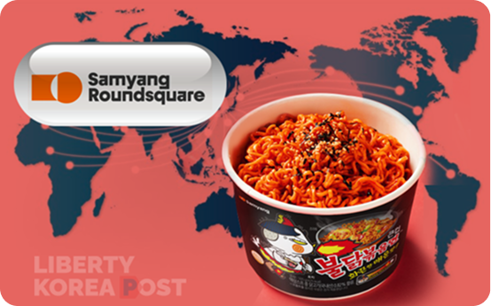
특별한 맛으로 새로운 식문화를 만듭니다.
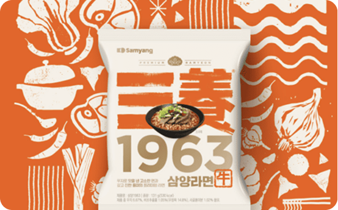
삼양라면의 이야기와 기술력을 확인하세요.
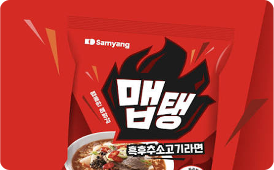
다양한 취향에 맞춘 맛의 가능성을 탐색합니다.
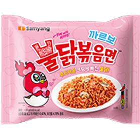
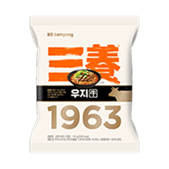
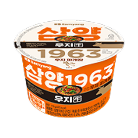
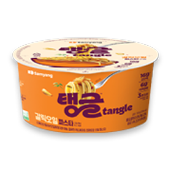
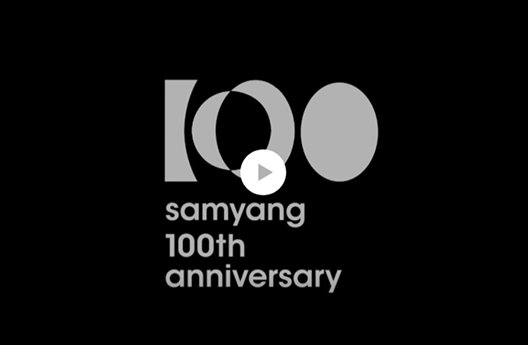
환경을 생각하는 실천으로 더 나은 미래를 만들어갑니다.
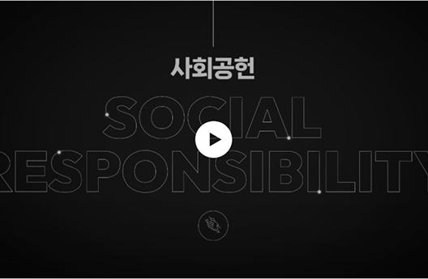
지역사회와 함께 성장하며 기업의 사회적 책임을 실천합니다.
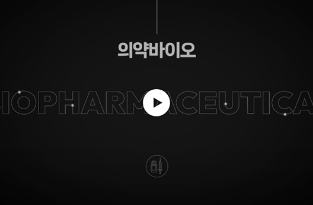
신뢰를 바탕으로 투명하고 지속가능한 경영을 이어갑니다.
삼양식품의 다양한 이야기와 콘텐츠를 만나보세요.
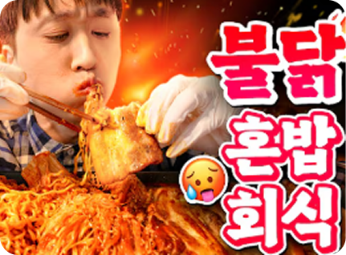
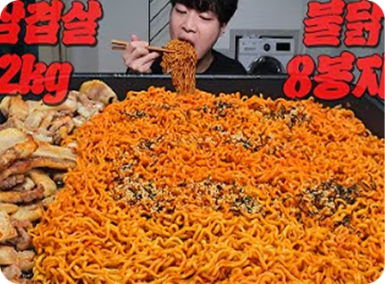
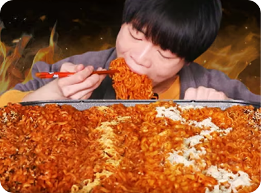
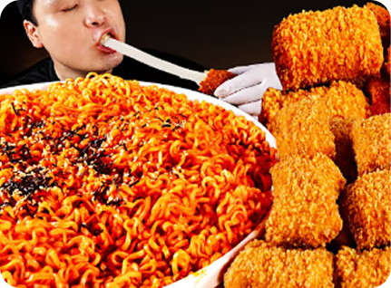